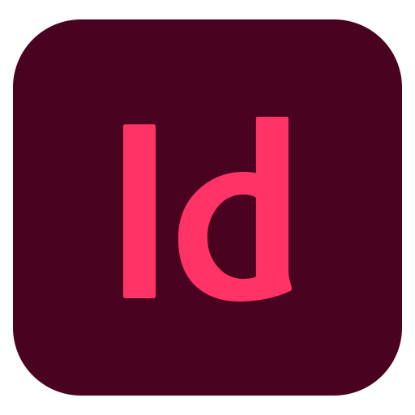
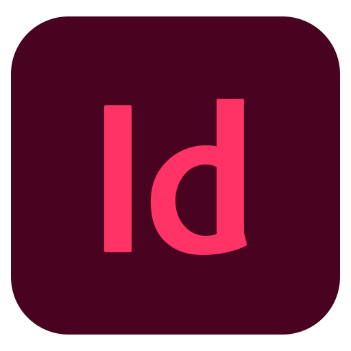

À mon sujet
Étudiante en développement web, et
particulièrement intéressée par le front-end
ainsi que le UX Design, j'ai pour habitude de
travailler en équipe. Maîtrisant différents
langages et frameworks, et logiciels de
graphisme je recherche une expérience dans
laquelle exploiter pleinement mes acquis tout
en me perfectionnant.
Mon Parcours scolaire
- 2022-2023 : Licence Professionnelle
CRRW* Intégration et Webdesign à
l'EiSINe de Charleville-Mézières.
- 2020-2022 : DUT Informatique,
spécialité Web à l'IUT de Reims.
- 2017-2020 : BAC Scientifique Spécialité
Mathématiques mention Très Bien
*CRRW : Conception, Réalisation, Rédaction Web


 
